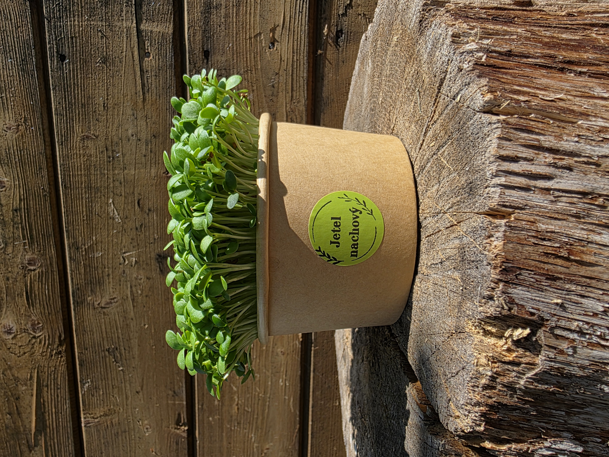

Jetel nachový
-jemná mírně sladká chuť s oříškovým nádechem
-obsah vitamínu C, A, K, B1, B2, B3, B6, B9 a E
-minerály: vápník, draslík, železo, hořčík, …
Obsahuje mnoho zdravých látek:
-vitamín C – podporuje imunitu
-vitamín A – klíčový pro zrak, imunitní systém a kvalitu pokožky
-vitamín K – klíčový pro srážlivost krve a zdraví kostí
-vitamín B1 – tvorba energie a správná funkce nervové soustavy
-vitamín B2 – zdraví kůže, očí a sliznice
-vitamín B3 – psychická pohoda, zdraví kůže a správná funkce nervové soustavy
-vitamín B6 – klíčový pro krvetvorbu, správná funkce imunitního a nervového systému
-vitamín B9 (kyseliny listová) – podpora krvetvorby
-vitamín E – silný antioxidant, chrání buňky před stárnutím
-minerály: vápník, draslík, železo, hořčík, fosfor, zinek, mangan, chrom
Použití v kuchyni
Microgreens jetele nachového jsou univerzální ingrediencí každodenní stravy – hodí se do salátů, na sendviče a chlebíčky, jako topping na polévky a krémy, do smoothies a k lehkým pokrmům.
Výborně se kombinuje s ostatními luštěninovými microgreens.
Benefity pro zdraví
Výhonky jetele udržují hormonální rovnováhu (zejména pro ženy v menopauze), zdraví kardiovaskulárního systému, preventuje osteoporózu a detoxikuje organismus.
Cena 35 Kč • Kelímek ∅ 11 cm • Odběr dle dohody Jaroměř a okolí